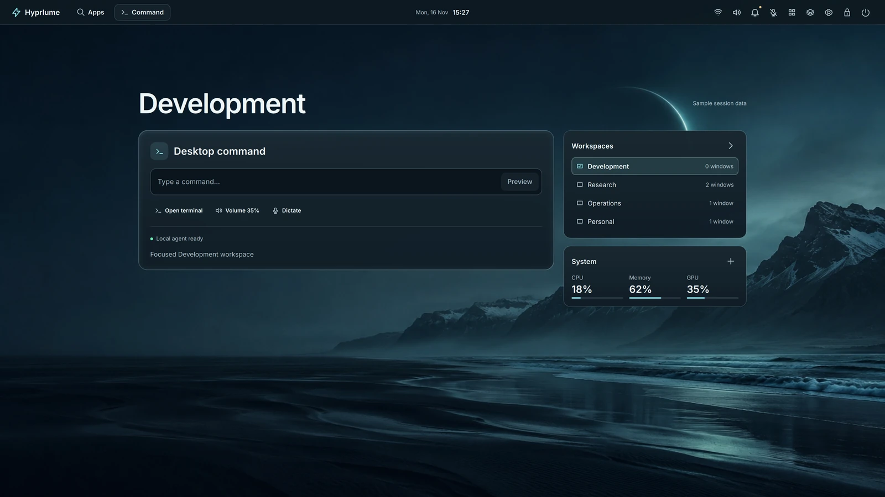

Get out of the way.
The dashboard unmaps behind apps. System sampling and liquid motion pause while it is hidden.
A cinematic shell for Hyprland. Liquid-glass panels, real 3D, and a voice companion that runs locally.
Install on ArchExplore the source
01 A DIFFERENT POINT OF VIEW
The observatory is the backdrop. The panels are real: workspaces, system metrics, commands and connections, all within reach.
Curved reflections. Refracted edges. Liquid gauges that follow CPU, memory and GPU readings.
Native Wi-Fi and Bluetooth controls, with the same glass treatment as the rest of your desktop.
02 INTELLIGENCE, CLOSER TO HOME
Say “Hey Pilot.” Switch a workspace, open your terminal, or set the volume. Small English voice models run locally, and direct commands work without an LLM.
Meet your local companionThe microphone starts off. Voice commands preview by default. Dictation stays text.
“Hey Pilot.”
“Switch to workspace two.”
Your confirmation comes next.
03 BEAUTY WITH A BACKBONE
Rust owns the services. Quickshell renders the shell. HyprPilot handles typed desktop actions. Each layer has a clear job.
Under the glassGlass, layouts, input and real 3D
Voice · commands · NetworkManager · BlueZ
Your windows, workspaces and input
The dashboard unmaps behind apps. System sampling and liquid motion pause while it is hidden.
A reduced-effects mode skips 3D, refraction and blur. Keep the same controls with a quieter desktop.
Rendering has a cost. Our tests, measured overhead and remaining hardware checks are public.
Validation notes04 MAKE SOME SPACE
Available on the AUR. Open source, from the first pixel to the last service.
A preview, with room to grow. Notifications, audio/media, power and other desktop services are next. New hidden/enterprise Wi-Fi profile editing and physical connection/pairing qualification remain open.
↗yay -S hyprlume
Prefer paru? Use paru -S hyprlume.
02 / START IN TWO TERMINALS
hyprlume daemonhyprlume shellRun inside your Hyprland session. The package does not replace your desktop configuration or enable services automatically.
git clone https://github.com/sumerchoudhary78/hyprlume.git
cd hyprlume
cargo build --release --lockedRust 1.90+, D-Bus development headers and pkg-config. Install the Quickshell/Qt and Hyprland runtime dependencies first; see the source build guide.
02 / START IN TWO TERMINALS
./target/release/hyprlume daemon./target/release/hyprlume shell --path ./shell
A FEW DETAILS
Not yet. The shell, command/voice path and Wi-Fi/Bluetooth panel are implemented. Notifications, media, power, tray, clipboard and screen-lock integration are on the roadmap. It is a preview you can use and help develop.
No. English wake-word detection, speech recognition and Piper speech output run locally after downloading the models. Simple desktop commands use a direct parser. An optional local LLM can plan more complex requests, with confirmation before model-generated actions run.
The source is available for Linux systems with the required Hyprland, Quickshell, Qt and audio dependencies. The packaged and physical-session checks currently focus on Arch x86_64. Other distributions, aarch64, multiple monitors and driver combinations still need qualification.
Built in the open.